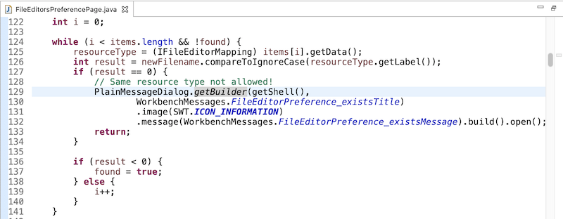
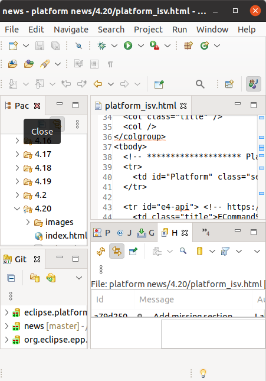
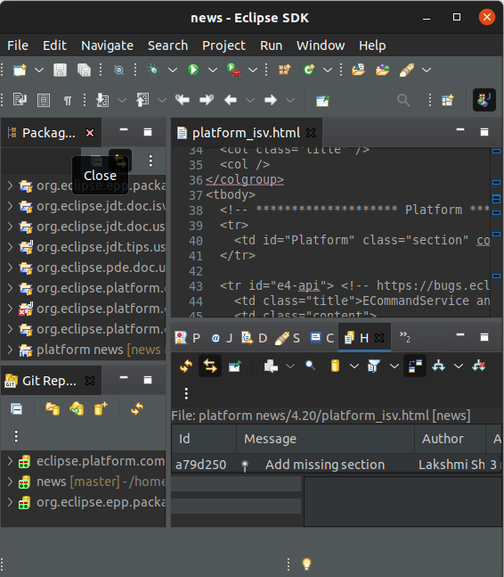
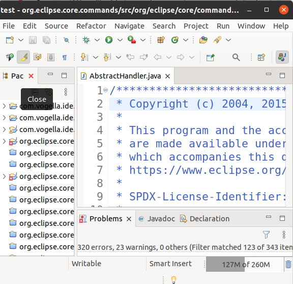
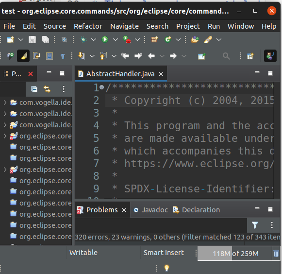

Views, Dialogs and Toolbar
Example Usage:
int answer = PlainMessageDialog.getBuilder(myShell, "The new dialog").image(SWT.ICON_Question).message("Like it?").buttLabels(Arrays.asList(IDialogConstants.YES_LABEL, IDialogConstants.NO_LABEL)).build().open();

Themes and Styling
Old:


New:



General Updates
create(int style) in GridDataFactorycreate(int style) which returns a new GridDataFactory instance.This method is similar to
new GridData(int style).